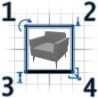
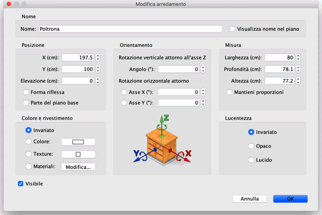
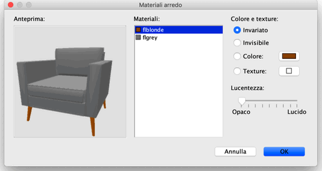

| Modificare arredamento | |||
È possibile modificare la posizione, la dimensione, l'elevazione e l'angolo dei
mobili della casa, sia con il mouse che con la voce di menu Arredamento >
Modifica.... Quando è selezionato un pezzo o un gruppo di pezzi nella piantina, puoi anche cambiarne le dimensioni, l'elevazione o l'angolo con uno dei quattro indicatori che compaiono a ogni angolo del pezzo selezionato./p>  |
|
Quando il puntatore del mouse è su uno di questi angoli,
cambia per indicare che puoi trascinare e rilasciare questo angolo per
cambiare gli attributi corrispondenti del pezzo di arredamento
selezionato. Mentre premi il pulsante del mouse, un suggerimento
mostra il valore degli attributi modificati. Un pezzo di arredamento può essere inoltre modificato mediante il suo pannello, facendo doppio clic su questo pezzo nella piantina o nella lista arredamento, o scegliendo Arredamento > Modifica... dopo averlo selezionato.  Nel pannello dell'arredamento, puoi cambiare il suo nome, l'ascissa
(X) e l'ordinata (Y) del suo centro, l'elevazione del suo fondo
dal pavimento, la larghezza, la profondità e l'altezza,
il colore o la texture, la lucentezza, la visibilità, l'angolo di
rotazione, se il suo nome deve essere o meno visualizzato
nella piantina e se il suo modello 3D deve essere
ribaltato. Non è possibile ruotare porte, finestre, scale e gruppi attorno a
un asse orizzontale.  Il pannello Materiali arredo mostra l'elenco dei materiali che puoi modificare e un'anteprima 3D delle modifiche apportate al colore e alla texture, perché i materiali potrebbero non avere sempre dei nomi chiari o tradotti (come bone2 invece di materasso o flyellow invece di telaio nella figura precedente). Quando necessario, puoi anche ruotare l'oggetto nell'anteprima 3D con il mouse e modificare più di un materiale contemporaneamente dopo averli selezionati nell'elenco. |
|